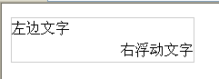

用来指定页面所用的HTML或者XHTML的版本。
过渡的（Transitional）、严格的（Strict）和框架的（Frameset）
XHTML是当前HTML版的继承者，HTML语法要求比较松散，这样对网页编写者来说，比较方便，但对于机器来说，语言的语法越松散，处理起来就越困难，对于传统的计算机来说，还有能力兼容松散语法，但对于许多其他设备，比如手机，难度就比较大。
XHTML 属性是以 XML 格式编写的 HTML 属性。
XHTML 属性必须使用小写
XHTML 属性值必须用引号包围
XHTML 禁止属性简写
语义化、视频音频、canvas、svg、storage、App Cache、拖放（Drag、Drop）、设备特性（定位，媒体、设备方向）、连接特性（web socket）、服务器发送事件（server-sent）
<canvas>、<header>、<hgroup>、<nav>、<aside>、<section>、<article>、<footer><title>、<main>、<small>、<strong>、<em>、<mark>、<progress>、<figure>、<cite>、<time>、<del>
css替代：<basefont>、<big>、<center>、<font>、<s>、<strike>、<tt>、<u>
iframe：<frameset>、<frame>、<noframes>
其它：<dir>_<ul>、<applet>_<object>、<acronym>_<abbr>
移除的属性：align、body标签上的link、vlink、alink、text属性...之类
META标签用来描述一个HTML网页文档的属性。提供有关页面的元信息，比如针对搜索引擎和更新频度的描述和关键词
桌面上视口宽度等于浏览器宽度，但在手机上不同。
手机上布局视口远大于屏幕宽度。
理想视口：改变布局视口适应手机屏。
viewport就是设置理想视口。通过meta的viewport的属性来进行一些缩放设置。
js是阻塞加载，会影响页面加载的速度，所以一般放在</body>标签前面
css放在页面顶部，页面渲染时首先是根据DOM结构生成一个DOM树然后加上CSS样式生成一个渲染树。如果CSS放在后面可能出现白屏之类的情况，并且css放在底部，当渲染树构建完成，浏览器不得不重新渲染整个页面，造成资源浪费。
data-*为前端开发者提供自定义的属性，这些属性集可以通过对象的dataset属性获取，不支持改属性的浏览器可以通过getAttribute方法获取。
并不是所有的浏览器都支持.dataset属性，测试的浏览器中只有Chrome和Opera支持
SVG：SVG是一种使用XML描述2D图形的语言。SVG DOM中的每个元素都是可用的，所以可以为每个元素附加JavaScript事件处理器。每个被绘制的图像均被视为对象。如果SVG对象的属性发生变化，那么浏览器能够自动重现图像
Canvas：通过js来绘制2D图形，逐像素进行渲染。一旦图形被绘制完成，它就不会继续得到浏览器的关注。如果其位置发生变化，那么整个场景也需要重新绘制，包括任何或许已被图形覆盖的对象。
区别
1. Canvas支持分辨率，SVG不支持
2. Canvas不支持事件处理器，SVG支持
3. Canvas只有弱的文本渲染能力，而SVG最适合带有大型渲染区域的应用程序(比如谷歌地图)
4. Canvas能够以.png或.jpg格式保存结果图像
5. SVG的复杂度过高的话会减慢渲染速度(任何过度使用DOM的应用都不快)
6. Canvas最适合图像密集型的游戏，其中的许多对象会被频繁重绘。而SVG不适合游戏应用
7. Canvas是基于位图的图像，它不能够改变大小，只能缩放显示；SVG是基于矢量的，所以它能够很好地处理图形大小的改变
8. Canvas提供的功能更原始，适合像素处理，动态渲染和大数据量绘制；SVG功能更完善，适合静态图片显示，高保真文档查看和打印的应用场景
9. 绘制Canvas对象后，不能使用脚本和CSS对它进行修改；而SVG对象是文档对象模型的一部分，所以可以随时使用脚本和CSS修改它们
例如vue的template、jade、jsx
DOM是文档对象模型，用来获取或设置文档中标签的属性。可以理解为网页的API
针对XHTML和HTML的DOM。这个DOM定义了一个HTMLDocument和HTMLElement做为这种实现的基础
对渲染进行分割。渲染过程就是: 服务端渲染局部，客户端渲染局部，而且随着服务端性能提高，可以分配更多工作到服务器上，这样的"渐进"。
从具体的使用的场景，不同的Level实际上对应不同的页面内容，论坛是一个比较清晰的例子，想象一个论坛：
1、网页的静态部分，HTML 固定的内容，比如导航栏和底部
2、页面首屏的内容，比如一个论坛的话题
3、页面首屏看不到的内容，比如话题下面多少回复
4、切换路由才会显示的页面，比如导航的另一个页面
对于这样的情况，显然有若干种可行的渲染分割的方案：
1). 全在客户端渲染
2). 1、2、3 在服务端渲染，4 等到用户点击从浏览器抓
3). 1、2 在服务器渲染，评论由客户端加载
4). 只有 1 在服务端渲染，动态的数据全部由客户端抓取
而这些方案对于服务端来说，性能的开销各不相同，形成一个梯度，而最后一种情况，服务端预编译页面就好了，几乎没有渲染负担
在HTML与CSS标准确定之后，浏览器一方面要按照标准去实现对HTML与CSS的支持，另一方面又要保证对非标准的旧网页设计的后向兼容性。因此，现代的浏览器一般都有两种渲染模式：标准模式和怪异模式。
在标准模式下，浏览器按照HTML与CSS标准对文档进行解析和渲染 在怪异模式下，浏览器则按照旧有的非标准的实现方式对文档进行解析和渲染
使用标准模式：浏览器遇到正确的文档声明DOCTYPE时，浏览器就会启动标准模式
使用怪异模式：没有文档类型声明或者文档类型声明不正确的文档
baseline对齐），如果仔细观察，你会发现图片与父元素下边框之间存在一点小空隙，解决方案1、vertical-line修改为其他值或让其失效。2、line-height修改到足够小。或line-height使用相对单位，然后font-size间接设置，例如font-size:0。那是因为标准模式下，图片是基线对齐的。而怪异模式下，则不存在这个问题。IE6下的left定位错误
<!-- 测试代码 -->
<div style="position:relative;border:1px solid orange;text-align:right;">
<a href="http://hi./baidu.com/cjky/" title="小老头的blog">小老头</a>
<div style="position:absolute;top:0;left:0;background:#CCC;">cjky</div>
</div>解决办法有两种：
1、给父层设置zoom:1触发layout。
2、给父层设置宽度width。
IE6下的bottom定位错误
<!-- 测试代码 -->
<div style="position:relative;border:1px solid orange;text-align:right;">
<a href="http://hi./baidu.com/cjky/" title="小老头的blog">小老头</a>
<div style="position:absolute;bottom:0;left:0;background:#CCC;">cjky</div>
</div>解决办法有两种：
1、给父层设置zoom:1触发layout。
2、给父层设置高度height。
IE6中很多Bug都可以通过触发layout得到解决，以上的解决方法无论是设置zoom:1还是设置width和height其实都是为了触发layout。下列的CSS属性或取值会让一个元素获得layout：
position:absolute绝对定位元素的包含区块(containing block)就会经常在这一方面出问题float:left|right由于layout元素的特性，浮动模型会有很多怪异的表现display:inline-block当一个内联级别的元素需要layout的时候就往往符用到它，这也可能也是这个CSS属性的唯一效果----让某个元素有layoutwidth: 除auto外的任何值height: 除auto外的任何值zoom: 除auto外的任何值
IE6认识的hacker 是下划线_和星号*
IE7 遨游认识的hacker是星号*
IE6父级元素不定宽高，子元素绝对定位BUG
解决方案在上个问题已经给出
双外边距bug
浮动元素设置外边距margin，IE6会呈现双倍的距离
解决方案：
①该元素加上_display:line;
②_margin:一半的距离;
不支持max-width/height、min-width/height
不支持max-width/height的解决方法：
①_width: expression(this.offsetWidth > 500 ? "500px" : this.offsetWidth + "px")
_height: expression(this.offsetHeight > 500 ? "500px" : this.offsetHeight + "px")
该法css中使用了表达式，会导致很高的cpu占用率
②JS解决
function limitSize ($obj) {
var limit = $obj.width > 500 ? "500px" : $obj.width + "px";
$obj.css("width", limit);
}
不支持mix-width/height的解决方法：
①利用IE6的特性，直接_width:500px或_height:500px即可。
IE6中外层元素会自动被内容撑开而不管其设置的width/height。
②同上max-width/height的解决方法。
PNG图片alpha透明
IE6只支持png-8或gif格式的布尔透明，alpha透明图片显示会呈现灰底
解决方案：
①使用DD_belatedPNG
②让"块"透明
③尽量避免使用png24/png32图，图片颜色数较少时，可以使用gif或者png-8格式代替。需要在生成图片时设置杂边（FW中叫色板）为背景颜色，否则会产生毛边。
④filter: progid:DXImageTransform.Microsoft.AlphaImageLoader(enabled=true, sizingMethod=noscale, src="images/angel.png");
IE6/7下li前的圆点等样式不显示
要给li加上圆点，很简单，li{ list-style: disc }搞定！但是真的搞定了么，测试一下，IE6/7下并没有搞定..
解决方案：
样式补充完整li{ list-style: disc inside }
IE6不支持position: fixed
解决方案：
①CSS解决，具体如下
position: absolute; bottom: auto; top: expression( eval(document.documentElement.scrollTop) );position: absolute; bottom: auto; top: expression( eval(document.documentElement.scrollTop + document.documentElement.clientHeight - this.offsetHeight - (parseInt(this.currentStyle.marginTop,10) || 0) - (parseInt(this.currentStyle.marginBottom,10) || 0)) ); position: absolute; right: auto; left: expression( eval(document.documentElement.scrollLeft) );position: absolute; right: auto; left: expression( eval(document.documentElement.scrollLeft + document.documentElement.clientWidth - this.offsetWidth) - (parseInt(this.currentStyle.marginLeft,10) || 0) - (parseInt(this.currentStyle.marginRight,10) || 0) ); 但是被固定定位的元素在滚动滚动条的时候会闪动，添加以下代码即可解决
*html,*html body{ background-image: url(about: blank); background-attachment: fixed; } /* 修正IE6振动bug */
②js解决，ie6下使用相对定位，然后滚动时动态计算改变top值即可
IE6/7下右浮动bug
<!-- 测试代码 -->
<!doctype html>
<html>
<head>
<meta charset="utf-8">
<title>右浮动bug</title>
<style>
p{ width:200px; height:24px; line-height:24px; border:1px solid #ccc; }
.fr{ float:right; }
</style>
</head>
<body>
<p>
左边文字
<span class="fr">右浮动文字</span>
</p>
</body>
</html>同一行有两个元素，右边的元素右浮动后，在IE6/7下会跑到下一行。像这样：

解决方案：
①将右浮动元素写在前面，即<p><span class="fr">右浮动文字</span>左边文字</p>。
②将左边文字也用容器包裹起来，使之左浮动，然后父级overflow:hidden或者清除浮动即可。
IE6下a标签内元素hover的bug
<!-- 测试代码 -->
<!doctype html>
<html>
<head>
<meta charset="utf-8">
<title>IE6下的hover引发的bug</title>
<style>
a{color:#333;}
a:hover span{color: red;}
</style>
</head>
<body>
<a href="#">IE6下 <span>(hover时我应该变色)</span> 。</a>
</body>
</html>在IE6下，鼠标移上去，发现文字没有变色。这是由于hover时我们改变的是链接内部元素的样式，而链接的样式没有改变，IE6根本不触发hover效果。
解决方法：
①让链接的样式也改变，加上一些无关紧要的样式即可，比如a:hover{padding:0px;}。
②用js模拟span元素的hover效果。
IE6/7下overflow溢出的bug
当父级元素设置了高宽以及overflow（hidden或scroll或auto），子元素使用position:relative相对定位的时候，在IE6/7下会发生溢出，overflow无效。
<!-- 测试代码 -->
<!DOCTYPE html>
<html>
<head>
<meta charset="utf-8">
<title>ie6/7 overflow溢出bug</title>
<style>
* { margin:0px; padding:0px; }
div { margin:20px; border:1px solid #333; width:100px; height:100px; overflow:auto; }
p { position:relative; }
</style>
</head>
<body>
<div>
<p>1</p><p>1</p><p>1</p><p>1</p>
<p>1</p><p>1</p><p>1</p><p>1</p>
</div>
</body>
</html>如图，IE6/7下溢出了
解决方案：
将父级（例中div）也给一个position:relative;
IE6下还有许多其它的bug，就不深究了。
跨域指的是浏览器不能执行其它网站的脚本。它是由浏览器的同源策略造成的，是浏览器对javaScript施加的安全限制。
安全问题，防止信息泄漏，如果不做限制，那么我的网站可以利用iframe内嵌银行页面，当你登录的时候，就可以读取到你的用户名跟密码。
PHP修改Header(XHR2方式)
在php接口脚本中加入以下两句即可：
header('Access-Control-Allow-Origin:*'); // 允许所有来源访问
header('Access-Control-Allow-Method:POST,GET'); // 允许访问的方式document.domain + iframe (只有主域名相同的时候才能使用该方法)
BOM 是浏览器对象模型，用来获取或设置浏览器的属性、行为，例如：新建窗口、获取屏幕分辨率、浏览器版本号等。是各个浏览器厂商根据 DOM
在各自浏览器上的实现（表现为不同浏览器定义有差别，实现方式不同）
BOM 主要处理浏览器窗口和框架，不过通常浏览器特定的 JavaScript扩展都被看做 BOM 的一部分。这些扩展包括：
弹出新的浏览器窗口
移动、关闭浏览器窗口以及调整窗口大小
提供 Web 浏览器详细信息的定位对象
提供用户屏幕分辨率详细信息的屏幕对象
对cookie的支持
IE 扩展了 BOM，加入了ActiveXObject类，可以通过 JavaScript 实例化ActiveX对象
javacsript是通过访问BOM对象来访问、控制、修改客户端(浏览器)，由于BOM的window包含了document，window对象的属性和方法是直接可以使用而且被感知的，因此可以直接使用window对象的document属性，通过document属性就可以访问、检索、修改XHTML文档内容与结构。因为document对象又是DOM模型的根节点。可以说，BOM包含了DOM(对象)，浏览器提供出来给予访问的是BOM对象，从BOM对象再访问到DOM对象，从而js可以操作浏览器以及浏览器读取到的文档。 其中
DOM包含：window
Window对象包含属性：document、location、navigator、screen、history、frames Document根节点包含子节点：forms、location、anchors、images、links
从window.document已然可以看出，DOM的最根本的对象是BOM的window对象的子对象
区别
DOM 是为了操作文档出现的 API，document 是其的一个对象； BOM 是为了操作浏览器出现的 API，window 是其的一个对象。
histroy、loaction、navigator、screen、frames、document
浏览器并发请求数，意即，同一时间针对同一域名下的请求有一定数量限制搜索。
超过限制数目的请求会被阻止，一般是4到6个，在10个以内
DNS服务根据用户输入域名解析与之相关的其它信息，如IP地址。
浏览器缓存 -> 系统缓存 -> 路由器缓存 -> ISP DNS 缓存 -> 递归搜索
在Yahoo的Yslow23条规则当中，其中一条是将JS放在底部。
async和defer的最主要的区别就是async是异步下载并立即执行，然后文档继续解析，defer是异步加载后解析文档，然后再执行脚本defer，如果脚本是模块化的，不依赖于任何脚本，那么则使用asyncurl: location.href
通信协议: location.protocol
主机: loction.host
端口号: location.port
路径: location.path
参数: location.search
锚点: location.hash
| 内核 | 代表浏览器 | 兼容前缀 |
| -------------------- |:--------------:| --------: |
| Trident内核（IE内核）| IE | -ms |
| Gecko内核 | FireFox | -moz |
| Webkit内核 | chrome、safira | -webkit |
| Presto内核 | Opera | -o |
浏览器缓存是浏览器在本地磁盘对用户最近请求过的文档进行存储，当访问者再次访问同一页面时，浏览器就可以直接从本地磁盘加载文档。
所以浏览器缓存有以下优点：
浏览器缓存是Web性能优化的重要方式。那么浏览器缓存的过程究竟是怎么样的呢？
在浏览器第一次发起请求时，本地无缓存，向web服务器发送请求，服务器起端响应请求，浏览器端缓存。过程如下：
在第一次请求时，服务器会将页面最后修改时间通过Last-Modified标识由服务器发送给客户端，客户端记录修改时间；服务器还会生成一个Etag，并发送给客户端。
浏览器后续再次进行请求时：

浏览器缓存主要分为强缓存（也称本地缓存）和协商缓存（也称弱缓存）。根据上图，浏览器在第一次请求发生后，再次发送请求时：
header信息，然后根据header中的Cache-Control和Expires来判断是否过期。若没过期则直接从缓存中获取资源信息，包括缓存的header的信息，所以此次请求不会与服务器进行通信。这里判断是否过期，则是强缓存相关。后面会讲Cache-Control和Expires相关。header字段信息，比如客户端会通过If-None-Match头将先前服务器端发送过来的Etag发送给服务器，服务会对比这个客户端发过来的Etag是否与服务器的相同，若相同，就将If-None-Match的值设为false，返回状态304，客户端继续使用本地缓存，不解析服务器端发回来的数据，若不相同就将If-None-Match的值设为true，返回状态为200，客户端重新记录服务器端返回的数据；客户端还会通过If-Modified-Since头将先前服务器端发过来的最后修改时间戳发送给服务器，服务器端通过这个时间戳判断客户端的页面是否是最新的，如果不是最新的，则返回最新的内容，如果是最新的，则返回304，客户端继续使用本地缓存。强缓存 是利用http中的Expires和cache-control两个字段来控制的，用来表示资源的缓存时间。强缓存中，普通刷新会忽略它，但不会清除它，需要强制刷新。浏览器强制刷新，请求会带上Cache-Control:no-cache和Pragma:no-cache
Expires 是http1.0的规范，它的值是一个绝对时间的GMT格式的时间字符串，表示资源的失效时间。这种方式有个明显的缺点，由于失效时间是一个绝对时间，所以当服务端和客户端时间偏差较大的时候会导致缓存混乱。如果同时出现Cache-Control:max-age和Expires，那么max-age的优先级更高。
Cache-Control 是http1.1中出现的，主要利用该字段的max-age值来判断，它是一个相对时间。例如Cache-Control:max-age=31536000表示资源的有效期为31536000秒，也就是365天内再次请求这条数据，都会直接获取缓存数据库中的数据直接使用。cache-control还有几个常用的设置值:
no-cache：不使用本地缓存，需要使用协商缓存。先与服务器确认返回的响应是否被更改，如果之前的响应中存在Etag，那么请求的时候会与服务端验证，若资源未被修改，则可以避免重新下载。no-store：直接禁止浏览器缓存数据，每次都向服务器请求。public：可以被所有用户缓存，包括终端用户和CDN等中间代理服务器。private：只能被终端用户的浏览器缓存。Cache-Control与Expires可以在服务端配置时同时启用，同时启用时Cache-Control优先级高。
协商缓存 就是由服务器来确定缓存资源是否可用，所以客户端与服务器需要通过某种标识来进行通信，从而让服务器判断请求资源是否可以缓存访问。
这个主要涉及两组header字段：Etag和If-None-Match、Last-Modified和If-Modified-Since。
Etag和If-None-MatchEtag/If-None-Match返回的是一个校验码。Etag可以保证每一个资源是唯一的，资源变化都会导致Etag改变。服务器根据浏览器发送的If-None-Match值来判断是否命中缓存。
与Last-Modified不一样的是，当服务器返回304 Not Modified的响应时，由于Etag重新生成过，response header中还会把这个Etag返回，即使这个Etag跟之前的没有变化。
Last-Modified和If-Modified-Since
浏览器第一次请求一个资源的时候，服务器返回的header中会加上Last-Modified，Last-Modified是一个时间标识该资源的最后修改时间。
当浏览器再次请求该资源的时候，request请求头中会包含If-Modified-Since，该值为缓存之前返回的Last-Modified。服务器收到If-Modified-Since以后，根据资源的最后修改时间判断是否命中缓存。
为什么要有Etag?
根据Last-Modified最后修改时间足以让浏览器知道本地缓存文件是否足够新，为什么还需要Etag呢？HTTP1.1中Etag的出现主要是为了解决几个Last-Modified比较难解决的问题：
If-Modified-Since能检查到的粒度是s级的，这种修改无法判断(或者说UNIX记录MTIME只能精确到秒)；Last-Modified与ETag是可以一起使用的，服务器会优先验证ETag，一致的情况下，才会继续比对Last-Modified，最后才决定是否返回304。
200 OK：正常请求返回，有服务器请求，返回数据
200（from cache）：强缓存，无服务器请求，数据从缓存取
304：协商缓存，有服务器请求，服务器告知缓存是否可用
预加载：顾名思义，图片预加载就是在网页全部加载之前，提前加载图片。当用户需要查看时可直接从本地缓存中渲染，以提供给用户更好的体验，减少等待的时间。当然这种做法实际上牺牲了服务器的性能换取了更好的用户体验。
懒加载：延迟加载图片或符合某些条件时才加载某些图片。这样做的好处是减少不必要的访问数据库或延迟访问数据库的次数，因为每次访问数据库都是比较耗时的即只有真正使用该对象的数据时才会创建。懒加载的主要目的是作为服务器前端的优化，减少请求数或延迟请求数。
| 状态 | 说明 | | ------------ |:------------------------------------------------------------ | | 0(未初始化) | (XMLHttpRequest)对象已经创建，但还没有调用open()方法 | | 1(载入) | 已经调用open() 方法，但尚未发送请求 | | 2 (载入完成) | 通过send()方法发送请求到服务端，但是还无响应 | | 3 (交互) | 已经接收到HTTP响应头部信息，但是消息体部分还没有完全接收结束 | | 4 (完成) | 已经接收到了全部数据，并且连接已经关闭 |
status是一种辅状态判断，只是status更多是服务器方的状态判断。它的状态有几十种，下面分类简单说明下：
| 状态码 | 类别 | 说明 | 例子 |
| ------ | :--------- | :----------------------------------------- | -------: |
| 1xx | 信息类 | 表示收到Web浏览器请求，正在进一步的处理中 | 100：客户必须继续发出请求
101：客户要求服务器根据请求转换HTTP协议版本 |
| 2xx | 成功 | 表示用户请求被正确接收，理解和处理 | 200：OK；
201：提示知道新文件的URL |
| 3xx | 重定向 | 表示请求没有成功，客户必须采取进一步的动作 | 300：请求的资源可在多处得到；
301：删除请求数据 |
| 4xx | 客户端错误 | 表示客户端提交的请求有错误 | 404：NOT Found，意味着请求中所引用的文档不存在 |
| 5xx | 服务器错误 | 表示服务器不能完成对请求的处理 | 500：服务器产生内部错误 |
XMLHTTPRequest对象可以在不刷新整个页面的前提下，实现局部刷新网页，jQuery中的Ajax就是基于此原理而开发的。
首选先创建一个Button，里面有我们的响应事件
<input type="button" value="异步调用" onclick="XMLRq();" />这里响应事件函数是XMLRq()，那XMLRq()的函数代码片段如下
function XMLRq () {
var xmlHttpreq = null;
// 创建xmlHTTPRequest对象
if (window.ActiveXObject) { // IE6
xmlHttpreq = new ActiveXObject("Microsoft.XMLHTTP");
} else if (window.XMLHttpRequest) { // 除了IE5与IE6以外的浏览器
xmlHttpreq = new XMLHttpRequest();
}
// 建立连接，发送数据
if (xmlHttpreq != null) {
xmlHttpreq.open("GET", "Ajax_response1.aspx", true);
xmlHttpreq.onreadystatechange = setCallback;
xmlHttpreq.send(null);
}
// 回调函数
function setCallback () {
if (xmlHttpreq.readyState == 4) {
if (xmlHttpreq.status == 200) {
console.log(xmlHttpreq.responseText);
}
}
}
}即过程为创建xmlHTTPRequest对象 -> 调用open()建立连接 -> 调用send()发送数据 -> 监听readyState变化，设置回调函数
保存在客户端，且同源
| 特性 | cookie | localStorage | sessionStorage |
| -------------- |:------------- | :--------------- | :----------------- |
| 数据的生命期 | 一般由服务器生成，可设置失效时间
如果在浏览器端生成Cookie，默认是关闭浏览器后失效 | 除非被清除，否则永久保存 | 仅在当前会话下有效，关闭页面或浏览器后被清除 |
| 存放数据大小 | 4K左右 | 一般为5MB | 同localStorage |
| 与服务器端通信 | 每次都会携带在HTTP头中，如果使用cookie保存过多数据会带来性能问题 | 不参与和服务器的通信 | 同localStorage |
| 易用性 | 需要封装，原生的Cookie接口不友好 | 原生接口可以接受，亦可再次封装来对Object和Array有更好的支持 | 同localStorage |
session在服务器端，cookie在客户端 session可以放在文件、内存、数据库中，默认存在服务器的一个文件中。sessionsession的运行依赖session id，而session id是存在cookie中的，也就是说，如果浏览器禁用了cookie，同时session也会失效（一般这种情况下，会使用一种叫做URL重写的技术来进行会话跟踪，即每次HTTP交互，URL后面都会被附加上一个诸如 sid=xxxxx 这样的参数，服务端据此来识别用户） 因此，维持一个会话的核心就是客户端的唯一标识，即session id
当应用程序收到含有不可信的数据，在没有进行适当的验证和转义的情况下，就将它发送给一个网页浏览器，这就会产生跨站脚本攻击（XSS）。XSS允许攻击者在受害者的浏览器上执行脚本，从而劫持用户会话、危害网站、或者将用户转向恶意网站。
CSRF跨站请求伪造
一个跨站请求伪造攻击迫使登录用户的浏览器将伪造的HTTP请求，包括该用户的会话cookie和其它认证信息，发送到一个存在漏洞的web应用程序。这就允许了攻击者迫使用户浏览器向存在漏洞的应用程序发送请求，而这些请求会被应用程序认为是用户的合法请求。
CSS引入box-sizing属性，它有border-box跟content-box两个值。
box-sizing:content-box;时，浏览器对盒模型的解释遵从我们之前认识到的W3C标准，当它定义width和height时，它的宽度不包括border和paddingbox-sizing:border-box;时，相当于以怪异模式解析，浏览器对盒模型的解释与IE6之前的版本相同，当它定义width和height时，border和padding则是被包含在宽高之内的。link标签引入的 CSS 被同时加载；@import url()引入的 CSS 将在页面加载完毕后被加载@import是 CSS 提供的语法规则，只有导入样式表的作用；link是 HTML 提供的标签，不仅可以加载 CSS 文件，还可以定义 RSS、rel 连接属性等@import是css2.1里面的，所以古老的ie5不支持DOM ，插入link标签来改变样式；由于 DOM方法是基于文档的，无法使用@import的方式插入样式。img、input）button、iframe、map、script、del、ins、object、applet在CSS规范中，浮动定位不属于正常的页面流（page flow），是独立定位的。所以，只含有浮动元素的父容器，在显示时不考虑子元素的位置，就当它们不存在一样。这就造成了显示出来，父容器好像空容器一样。
添加空标签
原理：在浮动元素下方添加一个非浮动元素
<div>
<div style="float:left;width:45%;"></div>
<div style="float:right;width:45%;"></div>
<div style="clear:both;"></div>
</div>缺点：要在页面中增加冗余标签，违背了语义化的原则
浮动父容器
原理：将父容器也改成浮动定位，这样它就可以带着子元素一起浮动
<div style="float:left;">
<div style="float:left;width:45%;"></div>
<div style="float:right;width:45%;"></div>
</div>缺点：在于父容器变成浮动以后，会影响到后面元素的定位
浮动元素的自动clearing
原理：让父容器变得可以自动"清理"（clearing）子元素的浮动，从而能够识别出浮动子元素的位置，不会出现显示上的差错。
<div style="overflow: hidden;">
<div style="float:left;width:45%;"></div>
<div style="float:right;width:45%;"></div>
</div>缺点：IE 6不支持。另外一旦子元素的大小超过父容器的大小，就会出显示问题
伪元素实现
原理：利用:after，在父容器的尾部自动创建一个子元素
.clearfix:after {
content: "\0020";
display: block;
height: 0;
clear: both;
}
.clearfix {
zoom: 1;
} content:"020";是在父容器的结尾处放一个空白字符，height: 0;是让这个这个空白字符不显示出来，display: block; clear: both;是确保这个空白字符是非浮动的独立区块。但是，:afterIE 6不支持，于是添加zoom:1;就行了，这条命令的作用是激活父元素的hasLayout属性，让父元素拥有自己的布局。
问题1、2、3都可以通过 clear:both清除父元素浮动
问题1还可以通过这两个方法解决：设置父元素overflow:hidden/auto、父元素设置display:table
设置
position为absolute、fixed定位：隐式改变为display:block
设置浮动：隐式改变为display:block
设置position为relative：不改变display值，保持原来的状态
| 伪类 | 作用 | | ------------ |:------------------------------ | | :hover | 将样式添加到鼠标悬浮的元素 | | :active | 将样式添加到被激活的元素 | | :focus | 将样式添加到获得焦点的元素 | | :link | 将样式添加到未被访问过的链接 | | :visited | 将样式添加到被访问过的链接 | | :first-child | 将样式添加到元素的第一个子元素 | | :lang | 定义指定的元素中使用的语言 |
| 伪元素 | 作用 | | -------------- |:------------------------------ | | ::first-letter | 将样式添加到文本的首字母 | | ::first-line | 将样式添加到文本的首行 | | ::before | 在某元素之前插入某些内容 | | ::after | 将样式添加到未被访问过的链接 | | ::selection | 在某元素之后插入某些内容 | | ::placeholder | 匹配占位符的文本，只有元素设置了placeholder属性时，该伪元素才能生效 |
| 伪类 | 作用 |
| --------------------- |:----------------------------------------------- |
| p:first-of-type | 其父元素所有<p>元素的首个<p>元素的 |
| p:last-of-type | 其父元素所有<p>元素的最后<p>元素 |
| p:only-of-type | 其父元素仅有一个子元素为<p>元素的<p>元素 |
| p:only-child | 其父元素有且仅有一个子元素，且该元素为<p>元素 |
| p:nth-child(n) | 其父元素的第n个子元素的每个<p>元素 |
| p:nth-last-child(n) | 其父元素的倒数第n个子元素的每个<p>元素 |
| p:nth-of-type(n) | 其父元素所有p元素中的第n个<p>元素 |
| p:nth-last-of-type(n) | 其父元素所有p元素中的倒数第n个<p>元素 |
| p:last-child | 其父元素的最后一个子元素的每个<p>元素 |
| p:empty | 选择没有子元素的每个<p>元素（包括文本节点） |
| p:target | 选择当前活动的<p>元素 |
| p:not(p) | 选择非<p>元素的每个元素 |
| p:enabled | 控制表单控件的可用状态 |
| p:disabled | 控制表单控件的禁用状态 |
| p:checked | 单选框或复选框被选中 |
双冒号是在CSS3规范中引入的，用于区分伪类和伪元素。但是伪类兼容现存样式，浏览器需要同时支持旧的伪类，比如:first-line、:first-letter、:before、:after等。
对于CSS2之前已有的伪元素，比如:before，单冒号和双冒号的写法::before作用是一样的。如果不得不兼容IE浏览器，还是用CSS2的单冒号写法比较安全
任何一个容器都可以指定为flex布局,行内元素也可以使用flex布局。注意，设为flex布局以后，子元素的float、clear和vertical-align属性将失效。flexbox弹性盒子布局，一般用来解决垂直居中、一侧固定另一侧自适应的布局。
Flex布局由父容器称为flex容器（flex-container）和它直接的子元素称为flex 项目（flex-item）构成，在下文中将它们简称为“容器”和“项目”
 在上图中你可以看到用来描述Flex容器和它的子元素的属性和术语
在上图中你可以看到用来描述Flex容器和它的子元素的属性和术语
div{
display: -webkit-box;
display: -moz-box;
display: -ms-flexbox; // IE10
display: -webkit-flex; // chrome
display: flex;
}flex-item怎样在flex-container中排列，设置flex容器的主轴方向，它们(项目)两个主要的方向排列，就像一行一样水平排列或者像一列一样垂直排列flexbox的理念是所有的项目都排列在一条线上（轴线），flex-wrap 属性控制容器是否将它的项目排列在一行或者多行，并且控制新行堆叠的方向<flex-direction> || <flex-wrap>flex-direction，后一个参数设置flex-wrapflex-start: 所有项目向容器的左边对齐flex-end: 所有项目向容器的右边对齐center: 所有项目在容器中居中对齐space-between: 第一个项目和最后一个项目向容器的边界对齐，剩余的空间各个项目等分space-around: 所有的项目等分剩余的容器空间justify-content很相似，只不过是垂直方向的；这属性为所有的项目设置默认的交叉轴上的对齐方式，包括匿名的 stretch: 项目会填充容器的整个高或宽，从容器交叉轴的起点到交叉点的结束点flex-start: 项目会堆放在交叉轴的起始位置flex-end: 项目会堆放在交叉轴的结束位置center: 项目会堆放在交叉轴的居中位置baseline: 所有项目的基线会对齐justify-content在主轴上对齐所有项目的方式一样 stretch: 每一行的项目后面等比分配了交叉轴上的多余空间flex-start: 项目在容器的交叉轴起始点上堆放在一起flex-end: 项目在容器的交叉轴结束点上堆放在一起center: 项目的行被堆放在容器的交叉轴线中间space-between: 与justify-content类似，项目的行距离在容器的交叉轴线上被等分，第一行和末尾的一行与容器的边缘对齐space-around: 与justify-content类似，项目的行等分了容器的交叉线上的剩余空间<integer>order属性控制容器的直接子元素在容器中的顺序，默认在容器中这些项目是以该数字递增的方式排列的<number><number><width><flex-grow>``<flex-shrink>||<flex-basis>]flex-grow，flex-shrink和flex-basis的缩写形式，具体说明如下：flex: none，等同于 flex: 0 0 autoflex: auto，等同于 flex: 1 1 autoflex为非负数字，则该数字为flex-grow值，flex-shrink: 1，flex-basis: 0%flex为长度或百分比，则视为flex-basis值，flex-grow: 1，flex-shrink: 1flex为两个非负数字，则分别为flex-grow和flex-shrink的值，flex-basis: 0%flex为一个非负数字和一个长度或百分比，则分别为flex-grow和flex-basis，flex-shrink: 1align-items属性有同样的作用，它是用在单一的项目上的，可以完全压倒容器中align-items定义的对齐方式auto表示项目会使用父元素（容器）的align-items的值，如果该项目没有父元素的话align-self的值是stretchflex-item值得注意的是：float、clear、vertical-align这些属性对于项目(flex item)会失效
盒模型分为标准盒子模型跟IE盒子模型
简单来说
标准盒子模型box-sizing: content-box宽高含padding以及border
IE盒子模型box-sizing: border-box宽高不含padding以及border
inline就是将元素设置为内联元素
inline元素的水平方向margin、padding有效果，竖直方向无效简单来说就是将对象呈现为inline对象，但是对象的内容作为block对象呈现。之后的内联对象会被排列在同一行内，比如我们可以给一个link（a元素）``inline-block属性值，使其既具有block的宽度高度特性又具有inline的同行特性
IE（低版本IE）本来是不支持inline-block的，所以在IE中对内联元素使用display:inline-block，理论上IE是不识别的，但使用display:inline-block在IE下会触发layout，从而使内联元素拥有了display:inline-block属性的表象
定宽块状元素 - 水平居中
width: 300px;
margin-left: auto;
margin-right: auto;内联元素 - 水平居中
text-align: center绝对定位，元素定宽 - 水平居中
position: absolute;
left: 50%;
width: 300px;
margin-left: -150px;绝对定位，元素不定宽，无子元素 - 水平居中
position: absolute;
left: 50%;
transform: translate(-50%, 0);绝对定位，元素不定宽，有子元素 - 水平居中
.parent{
position: absolute;
left: 50%;
}
.child{
float: left;
position: relative;
right: 50%;
}flex实现 - 水平居中
display: flex;
justify-content: center;fit-content实现 - 水平居中
CSS3width新加的属性，可实现水平居中，但兼容性不太好
width: fit-content相对定位margin-top: -height/2 - 垂直居中
position: absolute;
left: 50%;
top: 50%;
width: 200px;
height: 200px;
margin-left: -100px;
margin-right: -100px;相对定位margin: auto - 垂直居中
position: absolute;
left: 0;
right: 0;
top: 0;
bottom: 0;
width: 200px;
height: 200px;
margin: auto;相对定位transform: translate(-50%, -50%) - 垂直居中
position: absolute;
left: 50%;
top: 50%;
width: 200px;
height: 200px;
transform: translate(-50%,-50%);绝对定位margin-top: -height/2 - 垂直居中
margin: auto - 垂直居中transform: translate(-50%, -50%) - 垂直居中display: table-cell - 垂直居中
display: table-cell;
vertical-align: middle;
text-align: center;内联元素line-height - 垂直居中
width: 100px;
height: 100px;
line-height: 100px;
text-align: center;CSS3属性display: -webkit-box - 垂直居中
display: -webkit-box;
-webkit-box-pack: center;
-webkit-box-align: center;:before高大上实现居中 - 垂直居中
<div class="wrapper">
<div class="box"></div>
</div>
.wrapper{
height: 100px;
width: 100px;
text-align: center; // 水平居中
border: 1px solid #ccc;
}
.wrapper:before{
display: inline-block;
content: "";
height: 100%;
vertical-align: middle;
visibility: hidden;
}
.box{
display: inline-block;
height: 20px;
width: 20px;
border: 1px solid #ccc;
vertical-align: middle;
} property是早已存在的不需要外界赋予的特质
property，无论如何，它们都会在初始化的时候再DOM对象上创建 property.操作。JQuery中用prop()方法来获取attribute是我们赋予某个事物的特质或对象
attributes属性里面 attribute属性的JavaScript中的类型是Attr，而不仅仅是保存属性名和值这么简单，它是一个Attr类型的对象，拥有NodeType、NodeName等属性getAttribute()操作。JQuery中用attr()方法来获取attribute和property之间的数据绑定是单向的，attribute -> propertyproperty能够从attribute中得到同步，attribute不会同步property上的值，更改property和attribute上的任意值，都会将更新反映到HTML页面中
<input type="text" id="test" value="abc">
var _dom = document.getElementById("test");
_dom.getAttribute("value"); // output => abc
_dom.value; // output => abc
手动修改输入框的值为"21414"
_dom.value; // output => 21414
_dom.getAttribute("value"); // output => abcJQuery中性能prop() > data() > attr()
opacity: 0visibility: hiddendisplay: noneposition: absolute; left: -9999px; top: -9999px;clip-path: polygon(0px 0px, 0px 0px, 0px 0px, 0px 0px)clip-path属性可以通过定义裁剪区域来决定目标元素哪个区域可见，哪个区域不可见，也就是只有在闭合路径内的部分才显示，区域以外的部分就不显示。上面polygon里面传入的就是四个坐标点当两个垂直外边距相遇时，它们将形成一个外边距。合并后的外边距的高度等于两个发生合并的外边距的高度中的较大者
解决方案：
消除边距合并的方式：形成BFC。但这里要注意的是，在形成BFC的方式中（float的值不为none，display的值为inline-block、table-cell、table-caption）这两个能直接起效果。但（overflow的值为auto或者hidden）这个必须外面还要包裹一层父元素
当一个元素包含在另一个元素中时（假设没有内边距或边框把外边距分隔开），它们的上和/或下外边距也会发生合并
解决方案:
1、给父元素加边框
2、给父元素加padding
只有普通文档流中块框的垂直外边距才会发生外边距合并。行内框、浮动框或绝对定位之间的外边距不会合并
CSS3网格布局，又叫二维网格布局。最开始我们用table布局，然后用float、position、inline-block布局，但是这些方法本质上是hack，遗漏了很多功能，例如垂直居中。后来出了很强大的flex布局，但是flex是一维布局。
grid布局的兼容性不是很好。具体可以在CANIUSE上查询
table一般用来做表格布局，它具有同行等高、宽度自适应的特性。
1、利用calc(100% - 120px)计算自适应宽度，有以下两种方案
float浮动实现布局inline-block实现布局2、利用block元素宽度具有填满父容器，并随着父容器的宽度自适应的流动特性，有以下两种方案
float:left，右侧margin-left:120pxposition:absolute，右侧margin-left:120px3、使用float + BFC方法
.left{
float: left;
margin-right: 20px;
}
.right{
margin-left: 0;
overflow: auto;
}同样是利用了左侧浮动，但是右侧盒子通过overflow:auto;形成了BFC，因此右侧盒子不会与浮动的元素重叠
4、flex布局
5、grid布局
其实跟两栏布局没什么区别，就不过多说明了。
1、圣杯布局
2、双飞翼布局
3、flex布局
4、grid布局
流式布局的特点是页面元素的宽度按照屏幕分辨率进行适配调整，但整体布局不变。代表作栅栏系统（网格系统）。
布局特点：屏幕分辨率变化时，页面里元素的大小会变化而但布局不变。（这就导致如果屏幕太大或者太小都会导致元素无法正常显示）
实现：区域横向尺寸用百分比实现；移动端高度单位用rem实现。PC端高度大都是用px来固定住，可以根据可视区域和父元素的实时尺寸进行调整，尽可能的适应各种分辨率，往往配合max-width/min-width等属性控制尺寸流动范围以免过大或者过小影响阅读
响应式设计的目标是确保一个页面在所有终端上都能显示出令人满意的效果，对CSS编写者而言，在实现上不拘泥于具体手法，但通常是糅合了流式布局 + 弹性布局，再搭配媒体查询技术使用。分别为不同的屏幕分辨率定义布局，同时，在每个布局中，应用流式布局的理念，即页面元素宽度随着窗口调整而自动适配。即：创建多个流体式布局，分别对应一个屏幕分辨率范围。可以把响应式布局看作是流式布局和自适应布局设计理念的融合。
布局特点：每个屏幕分辨率下面会有一个布局样式，即元素位置和大小都会变
实现：媒体查询+流式布局。通常使用@media媒体查询和网格系统配合相对布局单位进行布局，实际上就是综合响应式、流动等上述技术通过CSS给单一网页不同设备返回不同样式的技术统称
响应式与自适应的原理是相似的，都是检测设备，根据不同的设备采用不同的css，而且css都是采用的百分比的，而不是固定的宽度，不同点是响应式的模板在不同的设备上看上去是不一样的，会随着设备的改变而改变展示样式，而自适应不会，所有的设备看起来都是一套的模板，不过是长度或者图片变小了，不会根据设备采用不同的展示样式，流式就是采用了一些设置，当宽度大于多少时怎么展示，小于多少时怎么展示，而且展示的方式向水流一样，一部分一部分的加载，静态的就是采用固定宽度的了。
流式布局是用于解决类似的设备不同分辨率之间的兼容(一般分辨率差异较少)；响应式是用于解决不用设备之间不用分辨率之间的兼容问题(一般是指PC，平板，手机等设备之间较大的分辨率差异)。
1、viewport(over-fit:cover)
2、zepto
3、@media响应式设计
4、rem
5、1x图，2x图
px是像素。
像素有两种，一种是逻辑像素，一种是物理像素。当一个逻辑像素对应多个物理像素的时候，显示会更清晰。
一个逻辑像素对应多少个物理像素，这个叫做DPR(像素设备比),window.devicePixelRatio即可获取。css通常使用逻辑像素，也称为设备独立像素
DPI：每英寸有多少个点
PPI：每英寸有多少像素
普通屏幕通常包含96dpi，一般将2倍于此的屏幕称之为高分屏
<style>
@media screen and (min-resolution: 192dpi) {
.normal{display:none;}
}
@media screen and (min-resolution: 72dpi) and (max-resolution: 191dpi) {
.retina{display:none;}
}
</style>
<p class="retina">retina屏</p>
<p class="normal">普通屏</p>px: 绝对单位，设备独立像素
em: 相对单位，基准点为父节点字体的大小，如果自身定义了font-size按自身为基准点
rem: 相对单位，基准点为根节点html的字体大小来计算
vw: viewpoint width，视窗宽度，1vw等于视窗宽度的1%
vh: viewpoint height，视窗高度，1vh等于视窗高度的1%
vmin: vw跟vh中较小的那个
vmax: vw跟vh中较大的那个
pt(point): 绝对单位，大约1/72寸
overflow:hidden并不隐藏所有溢出的元素。
拥有overflow:hidden的块元素不具有position:relative和position:absolute样式；
内部溢出的元素是通过position:absolute绝对定位
例子：
<div style="overflow:hidden;width:100px;height:100px;">
<p style="width:200px;height:100%;background:red;"></p>
<p style="position:absolute; top:50px; left:50px;width:200px;height:50px;background: aqua;"></p>
</div>padding、margin设置为百分比的时候，那这个百分比是相对于其父元素的宽度而言。 可参考此处
①标签内的样式（假设级别为1000），<div style="color:Red;"></div>
②ID选择器（假设级别为100）
③类选择器（假设级别为10）
④标签选择器（假设级别为1）
那么后代选择器.test a的优先级为10 + 1 = 11
优先级：① > ② > ③ > ④
transition作用是指定了某一个属性（如width、left、transform等）在两个值之间如何过渡，它包括transition-property、transition-duration、transition-timing-function、transition-delay等。
它是令一个或多个可以用数值表示的css属性值发生变化时产生过渡效果，关注的是CSS property的变化
animation是属于关键帧动画的范畴，它本身被用来替代一些纯粹表现的javascript代码而实现动画。基于animation和@keyframe的动画一方面也是为了实现表现与行为的分离，它作用于元素本身而不是样式属性
区别
animation也是通过指定某一个属性（如width、left、transform等）在两个值之间如何过渡来实现动画的，与transition不同的是，animation可以通过keyframe显式控制当前帧的属性值，而transition只能隐式来进行（不能指定每帧的属性值）。 animation通过模拟属性值改变来实现动画，动画结束之后元素的属性没有变化；而transition确实改变了元素的属性值，动画结束之后元素的属性发生了变化；总结: 通过Transition和Animation指定如何改变不同的属性值，才实现了动画
animation-timing-function 和 transition-timing-function规定动画的速度曲线
cubic-bezier贝塞尔曲线，自定义贝塞尔曲线函数，通过设置四个参数，可以控制动画的速度，平时使用的ease、linear、ease-in等，其实也是输入了四个参数后得到的结果
个人理解：是异步的，在页面加载的时候，跟DOM的加载是并行的。而JS不会，所以JS是阻塞模式（defer和async除外）。
也就是说，css在加载时Dom还在继续加载构建，而过程中遇到的css样式或者img，则会向服务器发送一个请求，待资源返回后，将其添加到dom中的相对应位置中。
作为CSS3规范的一部分，媒体查询扩展了media属性（控制您的样式应用方式），允许设计人员基于各种不同的设备属性（比如屏幕宽度、方向等）来确定目标样式。
优点
减少http请求次数
减少图片的字节，提升网页加载速度
缺点
提高了网页的开发和维护成本
图片的位置需要固定为某个绝对数值，缺乏灵活性
需要非单向的平铺背景和需要网页缩放的情况下
右三角形
border-left: 10px solid red;
border-top: 10px solid transparent;
border-bottom: 10px solid transparent;右上三角形
border-top: 10px solid red;
border-left: 10px solid transparent;BFC（Block Formatting Contexts），块级格式化上下文。
BFC就是一个独立的盒子，并且与这个独立盒子里的布局不受外部影响，当然它也不会影响到外面的元素。例如margin折叠外边距合并问题可用BFC解决。
满足以下任一条件即可:
overflow不为visibilityfloat不为noneposition不为static和relativedisplay为flex、inline-block、table-cell、table-captionmargin决定，同一个BFC下相邻两个Box的margin会发生重叠（意味着如果相邻兄弟元素不属于同一个BFC，就不会发生margin重叠了）margin-left会触碰到盒子的左边缘border-left（对于从右到左的格式来说，则触碰到右边缘），即使存在浮动也如此。即不会发生margin穿透float Box重叠（可阻止因浮动元素引起的文字环绕现象）基本类型：Number、String、Boolean、null、undefined
引用类型：Object、Function、Array、Date等
基本类型的数据是存放在栈内存中的，而引用类型的数据是存放在堆内存中的。
引用类型：当复制保存着对象的某个变量时，操作的是对象的引用，但在为对象添加属性时，操作的是实际的对象
Number(null) // output -> 0null表示"没有对象"，即该处不应该有值，典型用法：
Number(undefined) // output -> NaNundefined表示"缺少值"，就是此处应该有一个值，但是还没有定义。典型用法：
上面提到：基本类型的数据是存放在栈内存中的，而引用类型的数据是存放在堆内存中
var newArr = [].concat(pro)var newObj = Object.assign({},pro)typeof，引用类型用instanceofJQuery中可以直接用$.isEmptyObject()，那原生怎么判断呢
function (obj) {
for (var i in obj) {
return false;
}
return true
}Function.prototype.bind()原理是用函数柯里化实现的，下面的调用方法就很好理解了。
this对象的指向this要指向的对象call跟apply都是对函数的直接调用；bind返回的是修改后的函数，需要执行
let xb = {
name: "xb",
say () {
alert(this.name);
}
}
let other = { name: "other" }
xb.say.call(other);
xb.say.apply(other);
xb.say.bind(other)();传参形式不一样
let xb = {
name: "xb",
say (done, sth) {
alert(`${this.name} ${done} ${sth}`);
}
}
let other = { name: "other" }
xb.say.call(other, "eat", "banana");
xb.say.apply(other, ["eat", "banana"]);
xb.say.bind(other, "drink", "water")();
xb.say.bind(other)("watch", "TV");instanceof
let a = [];
a instanceof Array;对象的constructor属性
a.constructor === ArrayObject原型上的toString方法
Object.prototype.toString.call(a); // [Object Array]Array.isArray()
Array.isArray(a)还有一些节点关系型API（兄弟节点、父子节点），操作元素属性的API（setAttribute、getAttribute），样式相关API等等
<div id="content">content
<div id="btn">button</div>
</div>
var content = document.getElementById("content");
var btn = document.getElementById('btn');
btn.onclick = function(){
alert("btn");
};
content.onclick = function(){
alert("content");
};
document.onclick = function(){
alert("document");
}如果点击容器#btn，则弹出的顺序是：btn -> content -> document，由此可以看出JavaScript的事件流机制。
IE提出的是冒泡流，而网景提出的是捕获流，后来在W3C组织的统一之下，JS支持了冒泡流和捕获流，但是目前低版本的IE浏览器还是只能支持冒泡流(IE6,IE7,IE8均只支持冒泡流)，所以为了能够兼容更多的浏览器，建议大家使用冒泡流
addEventListener的最后一个参数，true代表捕获流，false代表冒泡流，默认为falseonclick直接绑定的事件发生在冒泡阶段
e.stopPropagation()、e.stopImmediatePropagation()阻止事件的传播、冒泡
e.preventDefault()可以阻止事件的默认行为发生
默认行为是指：点击a标签就转跳到其他页面、拖拽一个图片到浏览器会自动打开、点击表单的提交按钮会提交表单等等，因为有的时候我们并不希望发生这些事情，所以需要阻止默认行为
HTML元素含有嵌套关系，并且事件流含有冒泡阶段。子元素的触发事件会冒泡到父元素的相同事件上。
一般情况只需给子元素注册特定的事件处理程序即可，但当子元素过多或频繁的进行增减操作怎么办？
比如一个ul包含了几十个li元素，对每个li元素进行单独的事件注册会影响性能。而现只要在父元素注册事件监听器，等待li事件触发后的冒泡阶段即可。
简单来说事件委托就是父元素监听子元素的冒泡事件。
<div id="div">
<ul id="ul" >
<li data-key="北京">北京</li>
<li data-key="上海">上海</li>
<li data-key="杭州">杭州</li>
</ul>
</div>
document.getElementById('div').addEventListener('click',function(e){
// 利用e.target操作当前点击对象
// 获取属性 e.target.attribute["data-key"].value
// 获取标签名 e.target.nodeName
// 获取class e.target.className
// 获取id e.target.id
});JQuery中调用delegate()或者on()实现事件委托。1.7版本开始时，推荐on()代替delegate()方法
$("li").on("click", function () {
console.log($(this).attr("data-key"));
})
// 以上代码无法监听新增加的`li`标签，所以应使用事件委托
$("#ul").on("click", "li", function () {
console.log($(this).attr("data-key"));
})this指向所属对象this指向全局对象this指向新对象。new Function中的this除外，它指向全局对象apply、call、bind改变了this的指向ES6箭头函数中的this继承自父执行上下文，apply、call等方法也无法改变this指向详解
// 以下例子都是ES6环境下的，与ES5`this`不一样，切莫混淆
var obj={
x:22,
say: () => {
// 简单对象（非函数）是没有执行上下文的，this指向全局对象
console.log(this);
}
}
function test2 () {
this.a = 22;
let b = () => {
console.log(this.a) // output => 22
}
b();
}
var x = new test2();function Outer(){
var x = 1;
function Inner (y) {
return x + y
};
return Inner;
}上面的Inner函数就是一个闭包，我的理解是: 闭包就是能够读取其他函数内部变量的函数，突破作用域链
在本质上，闭包是将函数内部和函数外部连接起来的桥梁
var inner1 = Outer();创建起来的Inner函数被inner1变量引用，inner1变量就对Outer函数体内的局部变量x有间接的引用。
内部函数对外部函数的变量有了引用关系——闭包就是这时产生的。每次对外部函数的调用，都会产生一次闭包。
// 写法1
function Test(r) {
this.r = r;
}
Test.prototype.area = function() {
return this.r * this.r;
}
var c = new Test(1.0);
alert(c.area());
// 写法2
var Circle = function() {
var obj = new Object();
obj.PI = 3.14159;
obj.area = function( r ) {
return this.PI * r * r;
}
return obj;
}
var c = new Circle();
c.area(1.0);
// 写法3
var Circle={
"PI":3.14159,
"area":function(r){
return this.PI * r * r;
}
};
Circle.area(1.0);
// 写法4
var Circle = new Function("this.PI = 3.14159;this.area = function( r ) {return r*r*this.PI;}");
(new Circle()).area(1.0);优点
缺点: 内存泄漏。乱用闭包而造成内存泄露，只能说是本末倒置了，实际上闭包概念就是为了避免内存泄露而存在的
内存泄漏的解决方案：在JavaScript代码段运行完之时将形成循环引用的JavaScript对象手动设置为空，切断引用
// 例子1
function example(){
var element =document.getElementByID("div1"); //①
element.onclick = function() {
alert("This is a leak!"); //②
};
element = null; // 释放内存
}
// 例子2
function Cars(){
this.name = "Benz";
this.color = ["white","black"];
}
Cars.prototype.sayColor = function(){
var outer = this;
return function(){
return outer.color
};
};
// 修改为
Cars.prototype.sayColor = function(){
var outerColor = this.color;
return function(){
return outerColor;
};
outColor = null; // 释放内存
};结果缓存
var CacheManager=(function(){
var cacheObj={};
return {
setItem:function(key,value){
cacheObj[key]=value;
},
getItem:function(key){
return cacheObj[key];
},
removeItem:function(key){
delete cacheObj[key];
},
//清空缓存
clear:function(){
cacheObj={};
}
}
})();
CacheManager.setItem("name","lisi");
alert(CacheManager.getItem("name"));封装
var person = function(){
//变量作用域为函数内部，外部无法访问
var name = "default";
return {
getName : function(){
return name;
},
setName : function(newName){
name = newName;
}
}
}(); 实现类和继承
function Person(){
var name = "default";
return {
getName : function(){
return name;
},
setName : function(newName){
name = newName;
}
}
};
var p = new Person();
p.setName("Tom");
p.getName(); // output => Tom
var Jack = function(){};
// 继承自Person
Jack.prototype = new Person();
// 添加私有方法
Jack.prototype.Say = function(){
alert("my name is " + this.getName());
};
var j = new Jack();
j.Say(); // output => my name is defaultnumber、string、boolean、undefined、object、function
typeof用来判断基本类型，null跟引用类型返回的都是objectinstanceof用来判断引用类型Object.prototype.toString.call(a)可以判断所有类型
A instanceof B: 只要B的原型对象出现在A的原型链中，就返回true
function Pig() {}
var pig = new Pig();
pig instanceof Pig // => true
Pig.prototype = { eat:function () {} };
// 当改变了prototype的时候，pig.__ptoto__ !== pig.prototype
pig instanceof Pig // => false
function Bird() {}
var bird = new Bird();
var o = {};
bird.__proto__ = o;
bird instanceof Bird // => false
Bird.prototype = o;
bird instanceof Bird // => true严格模式下语法跟行为会改变，例如
优点：
注：经过测试 IE6,7,8,9 均不支持严格模式
缺点:
现在网站的 JS 都会进行压缩，一些文件用了严格模式，而另一些没有。这时这些本来是严格模式的文件，被merge后，这个串就到了文件的中间，不仅没有指示严格模式，反而在压缩后浪费了字节。
函数作用域的含义是指，属于这个函数的全部变量都可以在整个函数的范围内使用及复用(事实上在嵌套的作用域中也可以使用)
JS作用域有：
作用域链
作用域即变量对象，作用域链是一个由变量对象组成的带头结点的单向链表，其主要作用就是用来进行变量查找
document.cookie
最简单的做法就是 document.cookie = "name=test";
一般会对存入的Cookie值进行加密或者编码，加上expire、path、domain、secure等限制参数
比如存入的Cookie格式为name=jack;password=123
做法就是 document.cookie.split(";")["name"].split("=")[1];
一般需要先解密，然后按照设置的格式将存入的Cookie分割为数组，然后获取需要的Cookie
每个HTML元素都有下列属性
clientHeight、clientWidth描述元素内尺寸，指元素内容 + 内边距的大小offsetHeight、offsetWidth描述元素外尺寸，指元素内容 + 内边距 + 边框的大小clientTop、clientLeft返回内边距的边缘跟边框的外边缘的水平和垂直距离，指左、上边框的宽度offsetTop、offsetLeft表示元素的左上角与offsetParent对象左上角的距离offsetParent指元素最近的定位(relative、absolute)祖先元素，递归上溯，如果没有祖先元素是定位的话，则取body元素的引用scrollHeight、scrollWidth指元素内容 + 内边距 + 溢出尺寸，如果无溢出内容，则与clientHeight、clientWidth相等scrollTop、scrollLeft指元素滚动条位置offsetTop、offsetLeft返回的X、Y坐标，对于很多元素来说，就是文档坐标
对于定位元素的子元素来说，是相对父元素的坐标，这个时候要得到文档坐标，需要经过简单的计算。
可以通过调用元素的getBoundingClientRect方法。方法返回一个有left、right、top、bottom属性的对象，分别表示元素四个位置的相对于视口的坐标。getBoundingClientRect所返回的坐标包含元素的内边距和边框，不包含外边距。兼容性很好
此外，还可以通过文档坐标跟滚动条的位置去计算
getBoundingClientRect()返回一个对象，该对象提供当前元素节点的大小、它相对于视口的位置等信息
getClientRects()方法与getBoundingClientRect()不同，该方法是一个返回元素的数个矩形区域的类数组对象。每个类数组对象的参数与getBoundingClientRect()方法相同
if (window.XMLHttpRequest) { // 非IE6
var xhr = new XMLHttpRequest();
} else { // IE6及以下
var xhr = new ActiveXObject("Microsoft.XMLHttp");
}
// xhr 具有一个 open 方法，这个方法的作用类似于初始化，并不会发起真正的请求
// open 方法具有 5 个参数，但是常用的是前 3 个
// method： 请求方式 —— get / post
// url：请求的地址
// async：是否异步请求，默认为 true（异步）
xhr.open(method, url, async);
// post 方式需要设置请求头
xhr.setRequestHeader('Content-Type','application/x-www-form-urlencoded;charset=UTF-8')
// send 方法发送请求，并接受一个可选参数
// 当请求方式为 post 时，可以将请求体的参数传入
// 当请求方式为 get 时，可以不传或传入 null
// 不管是 get 还是 post，参数都需要通过 encodeURIComponent 编码后拼接
xhr.send()
// 获取返回数据
xhr.onreadystatechange = function () {
if (xhr.readyState == 4) {
var status = xhr.status;
if (status >= 200 && status < 300 ||
status == 304) {
console.log(xhr.responseText);
}
}
}
// 超时时间单位为毫秒
xhr.timeout = 1000
// 当请求超时时，会触发 ontimeout 方法
xhr.ontimeout = () => console.log('请求超时')主要原理是利用了script标签可以跨域请求的特点，由其src属性发送请求到服务器，服务器返回js代码，网页端接受响应，然后就直接执行了，这和通过script标签引用外部文件的原理是一样的
// 省略了拼接src跟动态创建script标签
function jsonpCallback(result) {
alert(result.msg);
}
<script type="text/javascript" src="http://crossdomain.com/jsonServerResponse?jsonp=jsonpCallback"></script>自执行函数
捕获流跟冒泡流 eventPhase：调用事件处理的阶段 1捕获 2目标 3冒泡
jQuery封装好的事件方法
$(".xxx").click(function () {
// ...
})jQuery封装好的事件绑定on
$(".xxx").on("click", function () {
// ...
})js原生
在标准浏览器下，使用addEventListener()来监听事件
在IE浏览器下，使用attachEvent()来监听
var btn = document.getElementById('btn');
if (btn.addEventListener) {
btn.addEventListener('click',function(){
// ...
},false);
}
if (btn.attachEvent) {
btn.attachEvent("onclick", function () {
// ...
})
}Dom0的事件处理
// 添加事件，只能注册一个，多个会被覆盖
var dom0 = document.getElementById('click')
dom0.onclick = function(event){
alert(event.target);
}
// 删除
dom0.onclick = nullDom2的事件处理
// 添加事件
addEventListener(eventName,func,useCapture);
// 删除事件
removeEventListener(eventName,func,useCapture);上面原生事件绑定（跨浏览器）已经提到了，这里就不做说明。
事件绑定相当于在一个元素上进行监听，监听事件是否触发。
普通事件就是直接触发事件。
两者的区别就在于是否可重复使用。
事件绑定addEventListener可以在一个元素上监听同一事件多次，而普通事件（例如dom.onclick）多次写会被覆盖。
// 监听事件
function addEvent (element, type, func) {
if (window.addEventListener) {
element.addEventListener(type, func, false)
} else if (window.attachEvent) {
element.attachEvent(`on${type}`, func)
} else {
element[`on${type}`] = func
}
}
// 移除事件
function removeEvent (element, type, func) {
if (window.removeEventListener) {
element.removeEventListener(type, func, false)
} else if (window.detachEvent) {
element.detachEvent(`on${type}`, func)
} else {
element[`on${type}`] = null
}
}
// 阻止事件冒泡
function stopPropagation (event) {
if (event.stopPropagation) {
event.stopPropagation();
} else {
event.cancelBubble = true;
}
}
// 阻止默认事件
function preventDefault (event) {
if (event.preventDefault) {
event.preventDefault();
} else {
event.returnValue = false;
}
}在事件处理程序内部，对象this始终等于currentTarget的值(换个角度理解，DOM上的方法this指向都为该DOM-方法调用模式)，而target则只包含事件的实际目标。如果直接将事件处理程序指定给了目标元素，则this、currentTarget和target包含相同的值。
可参考事件委托理解
DOM文档的加载步骤为：
在第4步，会触发DOMContentLoaded事件。在第6步，触发load事件。
原生JS可以这么写：
document.addEventListener("DOMContentLoaded", function () {
// ...
}, false)
window.addEventListener("load", function () {
// ...
}, false)JQuery这么写：
$(document).ready(function () {})
$(document).load(function () {})<!--[if !IE]><!--> 除IE外都可识别 <!--<![endif]-->
<!--[if IE]> 所有的IE可识别 <![endif]-->
<!--[if lte IE 5]> IE6及IE6以下版本可识别 <![endif]-->
<!--[if lt IE 6]> IE6以下版本可识别 <![endif]-->
<!--[if IE 6]> 仅IE6可识别 <![endif]-->
<!--[if gt IE 5]> IE6以上版本可识别 <![endif]-->
<!--[if gte IE 6]> IE6以及IE6以上版本可识别 <![endif]-->Object.create()
ES5定义了一个名为Object.create（）的方法，它创建一个新对象，其中第一个参数是这个对象的原型，第二个参数对对象的属性进行进一步描述。
通过Object构造函数或对象字面量创建单个对象
它们都是用了同一个接口创建很多对象，会产生大量的重复代码，就是如果你有100个对象，那你要输入100次很多相同的代码。为了解决这个问题，出现了工厂模式
var obj = new Object();
var obj2 = { name:"test" }工厂模式
考虑在ES中无法创建类（ES6前），开发人员发明了一种函数，用函数来封装以特定接口创建对象的细节。（实现起来是在一个函数内创建好对象，然后把对象返回）
function createPerson (name) {
var o = new Object();
o.name = name;
return o;
}
var p1 = createPerson("person1");
var p2 = createPerson("person2");工厂模式虽然解决了创建了多个相似对象的问题，但没有解决对象识别的问题，即怎么知道一个对象的类型。随着JS的发展，又一个模式出现了。
构造函数模式
function Person (name) {
this.name = name;
this.sayName = function () {
console.log(this.name);
}
}
var p1 = new Person("p1");
var p2 = new Person("p2"); 与工厂模式对比：没有显示创建对象、把属性跟方法复制给了this对象、没有return语句、创建新实例必须用new操作符（否则this指向全局对象）、可以用instanceof检测对象类型（p1 instanceof Person知道自己是从哪里来的）
但是构造函数内部的方法会被重复创建，不同实例内的同名函数是不相等的。可通过将方法移到构造函数外部解决这一问题，但面临新问题：封装性不好。这些问题可通过原型模式解决。
原型模式
我们创建的每个函数都有一个prototype属性，这个属性是一个指针，指向一个对象，而这个对象的用途是包含可以由特定类型的所有实例共享的属性和方法。（prototype就是通过调用构造函数而创建的那个对象实例的原型对象）
使用原型对象的好处是可以让所有对象实例共享它所包含的属性和方法。换句话说，不必在构造函数中定义对象实例的信息，而是可以将这些信息直接添加到原型对象中。
function Person () {
}
Person.prototype.name = "Nicholas";
Person.prototype.sayName = function () {
};
var person1 = new Person(); 更常见的做法是用一个包含所有属性和方法的对象字面量来重写整个原型对象，并重设constructor属性。
function Person () {
}
Person.prototype = {
name:"...",
sayName:function(){
}
};
Object.defineProperty(Person.prototype,"constructor",{
enumerable:false,
value:Person
}); 原型对象的问题：
他省略了为构造函数传递初始化参数这一环节，结果所有实例在默认情况下都将取得相同的属性值，虽然这会在一定程度带来一定的不便，但不是最大的问题，最大的问题是由其共享的本性所决定的。
对于包含基本值的属性可以通过在实例上添加一个同名属性隐藏原型中的属性。然后，对于包含引用数据类型的值来说，会导致问题。
function Person () {}
Person.prototype = {
a: "default",
b: {c:21}
}
var p1 = new Person();
var p2 = new Person();
p1.a = 1;
p1.a; // output => 1
p2.a; // output => default
p1.b.c = 22;
p2.b // output => {c:22}这些问题导致很少单独使用原型模式。
组合使用构造函数模式和原型模式
这是创建自定义类型的最常见的方式
构造函数模式用于定义实例属性，而原型模式用于定义方法和共享的属性。所以每个实例都会有自己的一份实例属性的副本，但同时共享着对方法的引用，最大限度的节省了内存。同时支持向构造函数传递参数
function Person(name){
this.name=name;
this.friends=["S","C"];
}
Person.prototype={
constructor:Person,
sayName:function(){
alert(this.name);
}
};
var person1=new Person(...);function OBJ () {
this.name = "constructor";
}
OBJ.prototype.sayName = function () {
console.log(this.name);
}
var obj = new OBJ();new操作符到底干了什么呢？其实很简单，就干了三件事
var obj = {};
obj.__proto__ = OBJ.prototype;
OBJ.call(obj);显示原型prototype
只有函数才有prototype属性，这个属性值为一个object对象
实例对象时没有这个属性的（自己添加的不算）。
函数的prototype属性：在定义函数时自动添加的，默认值是一个空的Object对象
隐式原型__proto__
创建对象是自动创建添加的,默认值为构造函数的prototype属性值
function FOO () {
this.name = "21";
}
var foo = new FOO();
foo.prototype; // undefined
foo.__proto__ === FOO.prototype; // true
FOO.__proto__ === Function.prototype; // true
FOO.prototype.constructor === FOO; // true
FOO.prototype.__proto__ === Object.prototype; // true
Object.__proto__ === Function.prototype; // true
Object.prototype.__proto__ === null; // truefoo是Foo的一个实例，不是一个函数，所以没有prototype
Foo是Function的一个实例，而Function是一个函数，他的实例Foo也是一个函数，所以他们都有prototype
构造函数的prototype，默认情况下就是一个空的object对象，还额外添加了一个constructor属性。
在创建对象的时候会自动创建一个__proto__属性，指向它构造函数的prototype,当访问这个对象的属性的时候会顺带访问__proto__中对应的属性，也就是构造函数prototype，这样实现了继承
原型链是针对构造函数的，比如我先创建了一个函数B，然后var b = new B()，那么b就会继承B的属性，然后如果我访问b的某个属性，但是我并没有在b中定义这个变量，那么它就会往上（向创建出它的函数中）查找，这个查找的过程就叫做原型链。
原型链依赖__proto__而不是prototype，以上面构造函数FOO为例说明，当我们读取foo.name的时候，JS引擎会有以下操作
foo对象本身有没有name属性，foo.name实际上就是这一步找到的，如果没有就走到下一步foo.__proto__对象有没有name属性，没有则继续走到下一步foo.__proto__.__proto__对象有没有name属性，如果还是没有，则会继续查看foo.__proto__.__proto__.__proto__，直到找到name或者__proto__为null作用域是针对变量的。
作用域的特点就是，先在自己的变量范围中查找，如果找不到，就会沿着作用域往上找，这个查找的过程就叫作用域链
在原型对象上定义方法和属性的目的是为了被子类继承和使用。可以根据原型链来查找子类的属性，以及实现继承。
原生对象又叫本地对象、内部对象
是独立于宿主环境的ECMAScript实现提供的对象。与宿主无关，在javascript（远景浏览器）、nodejs（node平台）、jscript（ie浏览器）、typescript（微软平台）等等中均有这些对象
Object、Function、Array、String、Boolean、Number、Date、RegExp、Error、EvalError、RangeError、ReferenceError、SyntaxError、TypeError、URIError、Global
内置对象（不需要new）属于原生对象，由ECMAScript实现提供的、独立于宿主环境的所有对象，在ECMAScript程序开始执行时出现，即在引擎初始化阶段就被创建好的对象。这意味着开发者不必明确实例化内置对象，它已被实例化了
常见的内置对象有全局对象、Object、Math、String、Array、Number、Function、Boolean、JSON
简单的说，内置函数分为常规函数跟内置对象的函数。
常规函数包括以下9个函数：isNaN、alert、conform、parseInt、parseFloat、escape、unescape、eval、prompt
内置对象的函数：例如Array对象的join、reverse、sort等函数
ECMAScript官方未定义的对象都属于宿主对象,所有非本地对象都是宿主对象
一个是由宿主提供的对象，在浏览器中window对象以及其下边所有的子对象(如bom、dom等等)，在node中是globla及其子对象
一个是自定义的类对象。
因为扩展内置对象会影响整个程序中所使用到的该内置对象的原型属性
callee是arguments对象的一个成员，表示对函数对象本身的引用，它有个length属性（代表形参的长度）
function chen (x) {
var n = x <= 1 ? 1 : chen( x - 1 );
return x * n;
}比如上面的阶乘函数中调用了函数本身，如果函数名发生改变，里面的函数名也要发生改变，我们可以用callee来避免。
function chen (x) {
var n = x <= 1 ? 1 : arguments.callee(x - 1);
return x * n;
}caller是函数对象的一个属性，该属性保存着调用当前函数的函数的引用，并非被其他函数调用，则caller为null
function a () {
b();
}
function b () {
console.log(b.caller);
}
a(); // output => function a () { b() }
b(); // output => null结合上面的callee，可以改写为
function a () { b() }
function b () { console.log(arguments.callee.caller) }var a = 3;
var b = a;
b = 4;
a // output => 3引用类型对象是存在堆内存中的，该值在栈内存中存储的是引用地址。
浅拷贝跟深拷贝针对引用类型，浅拷贝是拷贝了对象的引用，深拷贝是将值放到新的堆内存。
// 浅拷贝
var obj = { name:"shallow copy" };
var obj2 = obj;
obj.name = "test";
obj2 // output => { name:"test" }浅拷贝的实现:
单层仅有基本类型值的时候，以下方案实现的是深拷贝
深拷贝的实现：
for in循环赋值，直到每一个元素都为基本类型为止object.assign()也为深拷贝JSON.stringify()转成JSON字符串，赋值以后然后再JSON.parse()转回来Object.create(oldObj)，可以达到深拷贝的效果$.extend可以实现深拷贝js中并没有重载机制，但是我们可以模仿重载，利用arguments这个数组。
function override () {
if (arguments.length === 1) {
return arguments[0];
} else if (arguments.length === 2) {
return arguments[0] + arguments[1];
}
}
override(1);
override(1,2);多态用途在于做面向对象开发时，需要有一个方法不变，但是它接收的参数类型是变化的，就可以使用多态
比如说你家里养了两只宠物，一只猫一只狗（参数不同），喂食的时候，它们都要吃饭（方法相同）：
function Animal (animal) {
animal.eat();
}
function Dog () { }
Dog.prototype.eat = function () {
console.log("狗吃狗粮");
}
function Cat () { }
Cat.prototype.eat = function () {
console.log("猫吃猫粮");
}
Animal(new Dog())
Animal(new Cat())可以简单的这么理解，重载是函数传入参数的不同，动态是改写父类的方法。
既然要实现继承，首先我们的有一个父类
function Person (name) {
this.name = name || "default";
}
Person.prototype.getName = function () {
console.log(this.name);
}原型链继承模式
function Man () { }
Man.prototype = new Person();
var man = new Man();
man.getName(); // output => default 上面代码中直接new了一个父类的是实例，然后赋给子类的原型。这样也就相当于直接将父类原型中的方法属性以及挂在this上的各种方法属性全赋给了子类的原型，简单粗暴！我们再来看看man,它是Man的一个实例，因为man本身没有getName方法，那么就会去原型链上去找，找到的是person的getName。这种继承方式下，所有的子类实例会共享一个父类对象的实例，这种方案最大问题就是子类无法通过父类创建私有属性。比如每一个Person都有一个名字，我们在初始化每个Man的时候要指定一个不同名字，然后子类将这个名字传递给父类，对于每个man来说，保存在相应person中的name应该是不同的，但是这种方式根本做不到。所以，这种继承方式，实战中基本不用
构造函数实现继承
function Man (name) {
Person.apply(this, arguments);
}
var man1 = new Man("jack");
var man2 = new Man("ruby");
ma1.name; // output => jack
man2.name; // output => ruby
man1.getName(); // output => man1.getName is not a function 在子类的在构造函数里用子类实例的this去调用父类的构造函数，从而达到继承父类属性的效果。这样一来，每new一个子类的实例，构造函数执行完后，都会有自己的name。但是这种办法只能继承父类构造函数中声明的实例属性，并没有继承父类原型的属性和方法，所以就找不到getName方法。为了同时继承父类原型，从而诞生了组合继承的方式
组合继承
function Man (name) {
Person.apply(this,arguments)
}
//继承原型
Man.prototype = new Person();
var man = new Man("jack");
man.name; // output => jack
man.getName(); // output => jack 这样不仅会继承构造函数中的属性，也会复制父类原型链中的属性。
但是，有个问题，Man.prototype = new Person() 这句执行后，Man的原型如下
> Man.prototype
> { name: "default" } 也就是说Man的原型中已经有了一个name属性，而之后创建man时传给构造的函数的name则是通过this重新定义了一个name属性，相当于只是覆盖掉了原型的name属性（原型中的name依然还在），这样很不优雅
寄生组合继承
综上所述，其实我们可以将继承分为两步：构造函数属性继承和建立子类和父类原型的链接。
function Man (name) {
Person.call(this, arguments);
}
Man.prototype = Object.create(Person.prototype);
// Man.prototype.constructor = Man; // 下面会解释为什么加这句代码
var man = new Man("jack");
man.name; // output => jack
man.getName(); // output => jack 这里用到了Object.creat(obj)方法，该方法会对传入的obj对象进行拷贝。和上面组合继承的主要区别就是：将父类的原型复制给了子类原型
还有一个问题，就是constructor属性，我们来看一下:
> Person.prototype.constructor
> ƒ Person(name) {
this.name = name || "default";
}
> Man.prototype.constructor
> ƒ Person(name) {
this.name = name || "default";
}constructor是类的构造函数，我们发现，Person和Man实例的constructor指向都是Person，当然，这并不会改变instanceof的结果，但是对于需要用到construcor的场景，就会有问题。所以一般我们会加上这么一句：
Man.prototype.constructor = Man综合来看，es5下，这种方式是首选，也是实际上最流行的
ES6中的继承
class Person {
constructor (name = "default") {
this.name = name;
}
getName () {
console.log(this.name);
}
}
class Man extends Person {
constructor (name) {
super(name);
}
}
var man = new Man("jack");
man.name; // output => jack
man.getName(); // output => jack ES6中的类和继承本质上是使用prototype实现的语法糖，构造函数中通过super()调用父类构造函数，如果有super方法，需要时构造函数中第一个执行的语句，this关键字在调用super之后才可用
类中定义的方法相当于在prototype上定义方法
constructor方法中定义属性相当于构造函数模式
super方法相当于在子类中调用父类的构造函数
Event Loop线程中包含任务队列（用来对不同优先级的异步事件进行排序），而任务队列又分为macro-task（宏任务）与micro-task（微任务），在最新标准中，它们被分别称为task与jobs。
macro-task大概包括：script(整体代码)、 setTimeout、setInterval、setImmediate、I/O、UI renderingmicro-task大概包括: process.nextTick、Promise、MutationObserver(html5新特性)
setTimeout / Promise等我们称之为任务源。而进入任务队列的是他们指定的具体执行任务（回调函数）。
来自不同的任务源的任务会进入到不同的任务队列中，而不同的任务队列执行过程如下：
执行过程如下：
macro-task中取出第一个任务micro-task中的所有任务取出，按顺序全部执行macro-task中取下一个micro-task中的全部取出而process.nextTick优先级永远大于promise.then，原因其实很简单。
在Node中，tickCallback在每一次执行完TaskQueue中的一个任务后被调用，而这个tickCallback中实质上干了两件事：
1. nextTickQueue中所有任务执行掉
2. 第一步执行完后执行_runMicrotasks函数，执行microtask中的部分(promise.then注册的回调)
所以很明显 process.nextTick > promise.then
(function () {
setTimeout(function() {console.log(4)}, 0);
new Promise(function executor(resolve) {
console.log(1);
for( var i=0 ; i<10000 ; i++ ) {
i == 9999 && resolve();
}
console.log(2);
}).then(function() {
console.log(5);
});
console.log(3);
})()
// 运行结果：1、2、3、5、4以上代码运行过程是这样的：
script代码作为一个宏任务进入主线程setTimeout，交给浏览器去计时，达到setTimeout限制最短计时之后，将callback存入到macro-task queue中Promise构造函数，构造函数参数执行，输出1，调用resolve改变Promise对象的状态，输出2promise对象调用then方法，将callback添加到micro-task queue中3调用栈为空，读取任务队列，按照
读取所有微观任务队列 -> 执行 ->
读取一个宏观任务队列 -> 执行 ->
读取所有微观任务队列 -> 执行 ->
再读取一个宏观任务队列…的顺序读取所有微观任务队列中的任务，执行这些任务指定的回调函数。执行then指定的回调函数，输出5（微观任务队列也具有优先级）
4new promise是同步的，立即执行Promise.then回调是micro-task，会在当前事件循环末尾中执行setTimeout被推进到macro-task 队列，是在下一次事件循环执行
简单实现见code/promise.js
观察者模式又叫发布订阅模式，它定义了一种一对多的关系，让多个观察者对象同时监听某一个主题对象，这个主题对象的状态发生变化时就会通知所有的观察者对象，使得它们能够自动更新自己。
使用观察者模式的好处：
例子：
function PubSub () {
this.handlers = {}
}
PubSub.prototype = {
on (eventType, handler) { // 订阅事件
if (!(eventType in this.handlers)) {
this.handlers[eventType] = [];
}
this.handlers[eventType].push(handler);
},
emit (eventType) { // 触发事件(发布事件)
let handlerArgs = Array.prototype.slice.call(arguments, 1);
for(let i = 0; i < this.handlers[eventType].length; i++) {
this.handlers[eventType][i].apply(self, handlerArgs);
}
},
off (eventType, handler) { // 删除订阅事件
let currentEvent = this.handlers[eventType];
let len = 0;
if (currentEvent) {
len = currentEvent.length;
for (let i = len - 1; i >= 0; i--){
if (currentEvent[i] === handler){
currentEvent.splice(i, 1);
}
}
}
}
}
var pubsub = new PubSub();
let callback = function (data) {
console.log(2, data);
}
// 订阅事件
pubsub.on("A", function (data) {
console.log(1, data);
})
pubsub.on("A", callback);
// 发布事件
pubsub.emit("A","明天新车发布");
// 取消订阅
pubsub.off("A", callback);可以参考此处 demo
DOM被移除或替换时，事件未清除导致的内存泄漏
<div id="myDiv">
<input type="button" value="Click me" id="myBtn">
</div>
var btn = document.getElementById("myBtn");
btn.onclick = function(){
// btn.onclick = null;
document.getElementById("myDiv").innerHTML = "Processing...";
} 应该加上上面的btn.onclick = null释放缓存，或改成事件委托来绑定事件。
闭包引起的内存泄漏
下面两个例子都会引起内存泄漏，都可以在最后加上obj = null手动GC
var leaks = (function(){
var obj = 'xxxxxx';// 被闭包所引用，不会被回收
return function(){
console.log(obj);
}
})()
function bindEvent () {
var obj = document.createElement("XXX");
obj.onclick = function () { }
}全局变了引起的内存泄漏
function leaks(){
leak = 'xxxxxx';//leak 成为一个全局变量，不会被回收}
被遗忘的定时器或者回调
var someResource = getData();
setInterval(function() {
var node = document.getElementById('Node');
if(node) {
node.innerHTML = JSON.stringify(someResource));
}
}, 1000);如果id为Node的元素从DOM中移除, 该定时器仍会存在, 同时, 因为回调函数中包含对someResource的引用, 定时器外面的someResource也不会被释放
js具有自动垃圾回收机制，执行环境会负责管理代码执行过程中使用的内存。原理就是找出那些不再继续使用的变量，然后释放其占有内存。
通常用采用的垃圾回收有两种方法：标记清除、引用计数
标记清除
这是javascript中最常用的垃圾回收方式。当变量进入执行环境是，就标记这个变量为“进入环境”。从逻辑上讲，永远不能释放进入环境的变量所占用的内存，因为只要执行流进入相应的环境，就可能会用到他们。当变量离开环境时，则将其标记为“离开环境”。
垃圾收集器在运行的时候会给存储在内存中的所有变量都加上标记。然后，它会去掉环境中的变量以及被环境中的变量引用的标记。而在此之后再被加上标记的变量将被视为准备删除的变量，原因是环境中的变量已经无法访问到这些变量了。最后。垃圾收集器完成内存清除工作，销毁那些带标记的值，并回收他们所占用的内存空间。
引用计数
引用计数的含义是跟踪记录每个值被引用的次数。当声明了一个变量并将一个引用类型赋值给该变量时，则这个值的引用次数就是1。相反，如果包含对这个值引用的变量又取得了另外一个值，则这个值的引用次数就减1。当这个引用次数变成0时，则说明没有办法再访问这个值了，因而就可以将其所占的内存空间给收回来。这样，垃圾收集器下次再运行时，它就会释放那些引用次数为0的值所占的内存。
为什么这个方法不常用呢？看下面代码
function problem() {
var objA = new Object();
var objB = new Object();
objA.someOtherObject = objB;
objB.anotherObject = objA;
} 在这个例子中，objA和objB通过各自的属性相互引用；也就是说这两个对象的引用次数都是2。在采用引用计数的策略中，由于函数执行之后，这两个对象都离开了作用域，函数执行完成之后，objA和objB还将会继续存在，因为他们的引用次数永远不会是0。这样的相互引用如果说很大量的存在就会导致大量的内存泄露。
IE中有一部分对象并不是原生JavaScript对象。例如，其BOM和DOM中的对象就是使用C++以COM（Component Object Model组件对象）对象的形式实现的，而COM对象的垃圾回收器就是采用的引用计数的策略。因此，即使IE（IE8及以下）的Javascript引擎使用标记清除的策略来实现的，但JavaScript访问的COM对象依然是基于引用计数的策略的。说白了，只要IE中涉及COM对象，就会存在循环引用的问题。
try catch finallythrow new Error() js中异常有六类
EvalError: raised when an error occurs executing code in eval()
RangeError: raised when a numeric variable or parameter is outside of its valid range
ReferenceError: raised when de-referencing an invalid reference
SyntaxError: raised when a syntax error occurs while parsing code in eval()
TypeError: raised when a variable or parameter is not a valid type
URIError: raised when encodeURI() or decodeURI() are passed invalid parameters
websocket是HTML5出的东西（协议），也就是说HTTP协议没有变化，或者说没关系，但HTTP是不支持持久连接的，而websocket是一个持久化的协议。
websocket约定了一个通信的规范，通过一个握手的机制，客户端和服务器之间能建立一个类似tcp的连接，从而方便它们之间的通信。在websocket出现之前，web交互一般是基于http协议的短连接或者长连接。
websocket是一种全新的协议，不属于http无状态协议，协议名为"ws"，这意味着一个websocket连接地址会是这样的写法：ws://**。websocket协议本质上是一个基于tcp的协议
var websocket = null;
// 判断当前浏览器是否支持WebSocket
if ('WebSocket' in window) {
websocket = new WebSocket("ws://localhost:8028/ThesisManage/websocket");
} else {
alert('当前浏览器 Not support websocket')
}
// 连接发生错误的回调方法
websocket.onerror = function () {
setMessageInnerHTML("WebSocket连接发生错误");
};
// 连接成功建立的回调方法
websocket.onopen = function () {
setMessageInnerHTML("WebSocket连接成功");
}
// 接收到消息的回调方法
websocket.onmessage = function (event) {
setMessageInnerHTML(event.data);
}
// 连接关闭的回调方法
websocket.onclose = function () {
setMessageInnerHTML("WebSocket连接关闭");
}
// 监听窗口关闭事件，当窗口关闭时，主动去关闭websocket连接，防止连接还没断开就关闭窗口，server端会抛异常。
window.onbeforeunload = function () {
closeWebSocket();
}
// 显示消息
function setMessageInnerHTML(innerHTML) {
console.log(innerHTML);
}
//关闭WebSocket连接
function closeWebSocket() {
websocket.close();
}
//发送消息
websocket.send("this is a message");函数柯里化是把接受多个参数的函数变换成接受一个单一参数（最初函数的第一个参数）的函数，并且返回接受余下的参数而且返回结果的新函数的技术。
用一句话总结函数柯里化，js柯里化是逐步传参，逐步缩小函数的适用范围，逐步求解的过程
举个例子，我们写一个函数，将函数的几个参数相加，返回结果：
var concat3Words = function (a, b, c) {
return a + b + c;
};
concat3Words("foo ","bar ","baza")函数柯里化呢？是分部求解，先传一个a参数，再传一个b参数，再传一个c参数，最后将这三个参数相加
var concat3WordsCurrying = function(a) {
return function (b) {
return function (c) {
return a + b + c;
};
};
};
concat3WordsCurrying("foo")("bar")("baza")如果要求可传递的参数不止3个，可以传任意多个参数，当不传参数时输出结果？
var adder = function () {
var _args = [];
return function () {
if (arguments.length === 0) {
return _args.reduce(function (a, b) {
return a + b;
});
}
[].push.apply(_args, [].slice.call(arguments));
return arguments.callee;
}
};
var sum = adder();
sum(100);
sum(200)(); // output => 300通用的柯里化函数：
var currying = function (fn) {
var _args = [];
return function () {
if (arguments.length === 0) {
return fn.apply(this, _args);
}
Array.prototype.push.apply(_args, [].slice.call(arguments));
return arguments.callee;
}
};例如：
var multi = function () {
var total = 0;
for (var i = 0, c; c = arguments[i++];) {
total += c;
}
return total;
};
var sum = currying(multi);
sum(1,2);
sum(3);
sum(); // output => 6通用写法:
var currying = function (fn) {
// 需要复用的参数
var _args = Array.prototype.slice.call(arguments, 1);
return function () {
// 自身参数
var __inargs = Array.prototype.slice.call(arguments);
// 回调函数传入 合并自身参数和复用参数之后的参数
return fn.apply(null, _args.concat(__inargs));
}
}例如：
// 例1
var add = function(){
var args = Array.prototype.slice.call(arguments);
var sum = ;
for(var i = 0; i < args.length; i++){
sum += args[i];
}
return sum;
}
var curryAdd = currying(add,1,2,3);
curryAdd(4) // output => 10
// 例2
function square(i) {
return i * i;
}
function map(handeler, list) {
return list.map(handeler);
}
var mapSQ = currying(map, square);
mapSQ([1, 2]); // output => [1,4]
mapSQ([6, 7]); // output => [36,49]
mapSQ([10, 20]); // output => [100,400]Function.prototype.bind方法就是典型的函数柯里化应用，bind方法将第一个参数设置为函数的执行上下文，其他参数依次传递给调用方法（函数主体本身不执行），并动态返回一个新的函数。
Function.prototype.bind = function(context) {
var _this = this;
var _args = Array.prototype.slice.call(arguments, 1);
return function() {
return _this.apply(context, _args.concat(Array.prototype.slice.call(arguments)))
}
}
var foo = {x: 888};
var bar = function () {
console.log(this.x);
}.bind(foo);
bar // output => f
bar() // output => 888引入模块 import './A.js'、import a from './B'
抛出模块 export / export default
主要作用于服务端，浏览器不兼容CommonJS的根本原因，在于缺少四个NodeJS环境的变量:require、module、exports、global
引入模块 var foo = require('./foo.js')
抛出模块 module.exports = function () {}
AMD规范是提前执行，推崇依赖前置，是require.js在推广过程中对模块定义的规范化产出
引入模块 require([module], callback)
定义模块，这里分两种情况（当前模块是否有依赖）define(function () {})、define([module], function () {})
CMD规范是延迟执行，推崇依赖就近，是SeaJS在推广过程中对模块定义的规范化产出
定义模块 define(id?, deps?, factory)
抛出接口:
exports是一个对象，用来向外提供模块接口; module.exports当前模块对外提供的接口; 引入模块 require(id)、require.async(id, callback?)
基于原生JS实现，以下列出两种思路：基于鼠标事件、基于拖拽拖放事件
onmousedown、onmousemove、onmouseup
当鼠标按下时，我们得记录当前元素的位置newSite。同时设置一个标记，用于表示此时鼠标时按下的状态，方便鼠标移动事件的执行。 当鼠标松开时，我们要将标记改变，说明此时鼠标松开了，当鼠标移动时就不能再移动元素了。 当鼠标按下并且移动时，我们就要记录鼠标每次移动的位置currentSite，currentSite和newSite的差值就是鼠标移动的距离，同时也是元素应该移动的距离，然后设置元素的位置就OK了。
具体实现代码见code/鼠标拖拽.html
被拖拽元素：ondragstart、ondrag、ondragend
目标元素：ondragenter、ondragover、ondragleave、ondrop
一个完整的drag and drop流程通常包含以下几个步骤:
draggable="true"实现元素的可拖拽dragstart设置拖拽数据copy、move、linkdragenter或者dragover取消浏览器默认行为使元素可拖放drop事件执行所需操作具体实现代码见code/拖拽拖放.html
reflow：例如某个子元素样式发生改变，直接影响到了其父元素以及往上追溯很多祖先元素（包括兄弟元素），这个时候浏览器要重新去渲染这个子元素相关联的所有元素的过程称为回流。repaint：如果只是改变某个元素的背景色、文 字颜色、边框颜色等等不影响它周围或内部布局的属性，将只会引起浏览器重绘。repaint的速度明显快于reflow
reflow几乎是无法避免的。现在界面上流行的一些效果，比如树状目录的折叠、展开（实质上是元素的显 示与隐藏）等，都将引起浏览器的reflow。鼠标滑过、点击……只要这些行为引起了页面上某些元素的占位面积、定位方式、边距等属性的变化，都会引起它内部、周围甚至整个页面的重新渲 染。通常我们都无法预估浏览器到底会reflow哪一部分的代码，它们都彼此相互影响着。
回流必将引起重绘，而重绘不一定会引起回流
注：display:none会触发reflow，而visibility:hidden只会触发repaint，因为没有发现位置变化
DOM的样式。与其这样，还不如预先定义好css的class，然后修改DOM的className，即将多次改变样式属性的操作合并成一次操作position属性设为absolute或fixed，这样此元素就脱离了文档流，它的变化不会影响到其他元素为动画的HTML元素，例如动画，那么修改他们的CSS是会大大减小reflow。因为,它们不影响其他元素的布局，所它他们只会导致重新绘制，而不是一个完整回流。这样消耗会更低css里不要有表达式expressionreflow，可以先把该dom节点抽离到内存中进行复杂的操作然后再display到页面上浏览器使用与requestAnimationFrame类似的机制，requestAnimationFrame比起setTimeout，setInterval设置动画的优势主要是:
requestAnimationFrame会把每一帧中的所有DOM操作集中起来，在一次重绘或回流中就完成,并且重绘或回流的时间间隔紧紧跟随浏览器的刷新频率,一般来说,这个频率为每秒60帧缺点:
缺点:
JS的Canvas动画，因为他没有回流，所以自然性能比有回流的CSS动画性能要好了
a. DNS预解析-> 使用CDN缓存，加快解析CDN寻找到目标地址（dns-prefetch）
3. 客户端和服务器建立连接 ==>建立TCP的安全通道，3次握手
a. CDN加速-> 使用内容分发网络，让用户更快的获取到所要内容
b. 启用压缩-> 在http协议中，使用类似Gzip压缩的方案（对服务器资源不足的时候进行权衡）
c. 使用HTTP/2协议-> http2.0针对1.0优化了很多东西，包括异步连接复用，头压缩等等，使传输更快4. 浏览器发送http请求 => 默认长连接（复用一个tcp通道，短连接：每次连接完就销毁）
a. 减少http请求-> 每个请求从创建到销毁都会消耗很多资源和时间，减少请求就可以相对来说更快展示内容
1) 压缩合并js文件以及css文件
2) 针对图片，可将图片进行合并然后下载，通过css Sprites切割展示（控制大小，太大的话反而适得其反）
b. 使用http缓存-> 缓存原则：越多越好，越久越好。让客户端发送更少请求，直接从本地获取，加快性能。
c. 减少cookie请求-> 针对非必要数据（静态资源）请求，进行跨域隔离，减少传输内容大小。
d. 预加载请求-> 针对一些业务中场景可预加载的内容，提前加载，在之后的用户操作中更少的请求，更快的响应
e. 选择get和post-> 在http定义的时候，get本质上就是获取数据，post是发送数据的。get可以在一个TCP报文完成请求，但是post先发header，再发送数据。so，考虑好请求选型。
f. 缓存方案选型-> 递进式缓存更新（防止一次性丢失大量缓存，导致负载骤多）5. 服务器响应请求 ==> tomcat、IIS等服务器通过本地映射文件关系找到地址或者通过数据库查找到数据，处理完成返回给浏览器
a. 后端框架选型 \
==> 更快的响应，前端更快的操作。
b. 数据库选型和优化 /6. 浏览器接受响应 ==> 浏览器根据报文头里面的数据进行不同的响应处理
a. 解耦第三方依赖-> 越多的第三方的不确定因素，会导致web的不稳定性和不确定性
b. 避免404资源-> 请求资源不到浪费了从请求到接受的所有资源7. 浏览器渲染顺序 ==>
- HTML解析开始构建dom树
- 外部脚本和样式表加载完毕
① 尽快加载css，首先将CSSOM对象渲染出来，然后进行页面渲染，否则导致页面闪屏，用户体验差
② css选择器是从右往左解析的，so类似#test a {color: #444}，css解析器会查找所有a标签的祖先节点，所以效率不是那么高
③ 在css的媒介查询中，最好不要直接和任何css规则直接相关。最好写到link标签中，告诉浏览器，只有在这个媒介下，加载指定这个css- 脚本在文档内解析并执行
① 按需加载脚本，例如现在的webpack就可以打包和按需加载js脚本
② 将脚本标记为异步，不阻塞页面渲染，获得最佳启动，保证无关主要的脚本不会阻塞页面
③ 慎重选型框架和类库，避免只是用类库和框架的一个功能或者函数，而引用整个文件。- HTML DOM完全构造起来
① DOM 的多个读操作（或多个写操作），应该放在一起。原则：统一读、统一写。- 图片和外部内容加载
① 对多媒体内容进行适当优化，包括恰当使用文件格式，文件处理、渐进式渲染等
② 避免空的src，空的src仍然会发送请求到服务器
③ 避免在html内容中缩放图片，如果你需要使用小图，则直接使用小图- 网页完成加载
① 服务端渲染，特别针对首屏加载很重要的网站，可以考虑这个方案。后端渲染结束，前端接管展示。
针对首屏展示优化
图片懒加载
针对展示只加载第一屏，等用户进行滚动的时候再进行加载。如果用户对下面内容不感兴趣，那么节省的请求。 浏览器本地缓存模块
可以通过按模块去划分，将页面的模块缓存到localStory中，每次请求核对模块版本号，丢失或者版本不一致重新请求，否则直接从本地拿（参考京东）
javascript优化
减少对dom节点的查询，因为每次都会重新去索引这个集合或者元素。或者查询一次缓存起来，以待接下来使用
考虑清楚页面的重绘和重排，因为进行js操作DOM的时候，这些操作相对来说十分损耗性能的。
避免使用eval和Function构造，因为解析器会将这些内容先转换成可执行代码，然后再进行接下去的操作。
减少作用域链的查找，如果一个闭包函数使用到全局作用域的数据，那么每次局部作用域都会一层一层爬到最高作用域取得数据。
数据访问，数据访问，对非引用类型数据访问和局部变量的访问是最快的。所以如果对引用类型的成员（对象的属性或者数组的成员）访问超过一次，则缓存
算法优化，将前端可能会使用的一些算法函数写的更优化，在时间和空间复杂度上寻找到一个最优方案。
去除重复加载同一模块脚本
智能事件处理，比如在一个div下有10个按钮，可以在冒泡过程中捕获这个事件源，然后注册
css优化
删除无用规则
内联关键CSS
避免@imports和Base64
启用高性价比属性(如opacity over rgba())
避免重复性工作
不要一条条地改变样式，而要通过改变class，或者csstext属性，一次性地改变样式。
可将元素设为display: none（需要1次重排和重绘），然后N次操作，最后恢复显示
position属性为absolute或fixed的元素，重排的开销会比较小，因为不用考虑它对其他元素的影响。
图片优化（网络请求中80%都是静态资源的请求）
图片正确格式的选择
图片尺寸的选择，在低分辨率等状况下考虑降级处理（考虑响应式图片）
使用正确的工具进行优化（有损压缩、无损压缩）
能用css处理和代理的，优先考虑css实现（阴影，滤镜等）
正确使用data url，比如说多地使用的地方，不建议data url，可考虑缓存
考虑图片的懒加载和元素可见加载方案
图片的预加载，在正确的合理的设计节点进行图片的预加载 Edit By MaHua